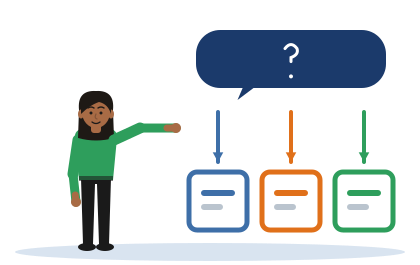

Three in the Question
[Illustrative example - do not cite] Tharindu, Chathura and Dilini are invented students, and their projects and organisations are invented too.
One idea
Your evaluation design is already written into your research question. A metric, a baseline and an environment can each be pointed to in the words of the question.
